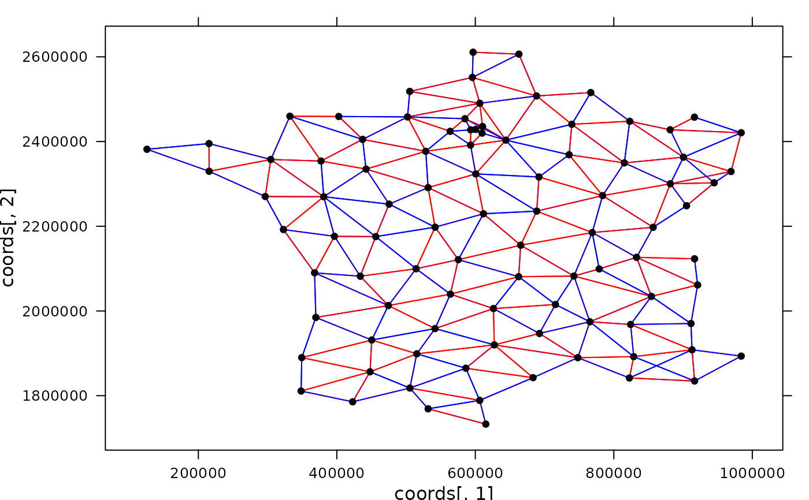

Panel functions for adding graphs.
adeg.panel.nb.RdPanel function for representing a graph into a trellis graphic (lattice package).
Two types of graph objects can be used: nb or listw object (spdep package) or simple edges informations.
Directions associated with the edges are not displayed.
Usage
adeg.panel.nb(nbobject, coords, col.edge = "black", lwd = 1, lty = 1, pch = 20,
cex = 1, col.node = "black", alpha = 1)
adeg.panel.edges(edges, coords, col.edge = "black", lwd = 1, lty = 1, pch = 20,
cex = 1, col.node = "black", alpha = 1)Arguments
- nbobject
a object of class
nborlistw- edges
a two columns matrix, representing the edges between the nodes. For a row i, x[i, 1] and x[i, 2] are linked, x[i, 1] and x[i, 2] being vertices number.
- coords
a two columns matrix containing vertices' coordinates
- col.edge
edges' color(s)
- lwd
line width (edges). Can be a vector
- lty
line type (edges). Can be a vector
- pch
vertices' representation type (symbols). Can be a vector
- cex
symbols' size(s) (vertices). Can be a vector
- col.node
vertices' color(s). Can be a vector
- alpha
symbols' transparency
Author
Alice Julien-Laferriere, Aurelie Siberchicot aurelie.siberchicot@univ-lyon1.fr and Stephane Dray
Note
For more information about the use of panel functions, please see the lattice package developed by Deepayan Sarkar.
Examples
if(require(lattice, quietly = TRUE) &
require(spdep, quietly = TRUE)) {
data(elec88, package = "ade4")
coords <- elec88$xy
xyplot(coords[, 2] ~ coords[, 1],
panel = function(...){adeg.panel.nb(elec88$nb, coords, col.edge = c("blue", "red"))})
}
#> To access larger datasets in this package, install the spDataLarge
#> package with: `install.packages('spDataLarge',
#> repos='https://nowosad.github.io/drat/', type='source')`
#> Linking to GEOS 3.12.1, GDAL 3.8.4, PROJ 9.4.0; sf_use_s2() is TRUE

if(require(lattice, quietly = TRUE)) {
edges <- matrix(c(1, 2, 3, 2, 4, 1, 3, 4), byrow = TRUE, ncol = 2)
coords <- matrix(c(0, 1, 1, 0, 0, -1, -1, 0), byrow = TRUE, ncol = 2)
xyplot(coords[,2] ~ coords[,1],
panel = function(...){adeg.panel.edges(edges, coords, lty = 1:4, cex = 5)})
}